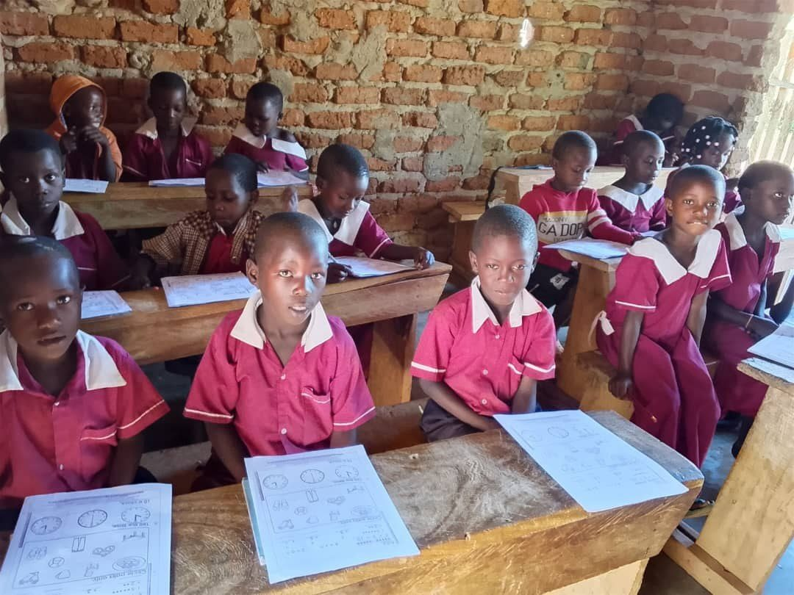
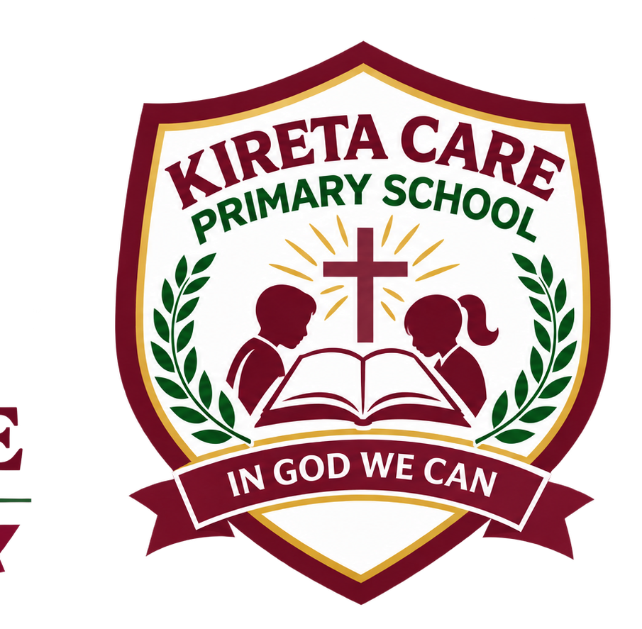
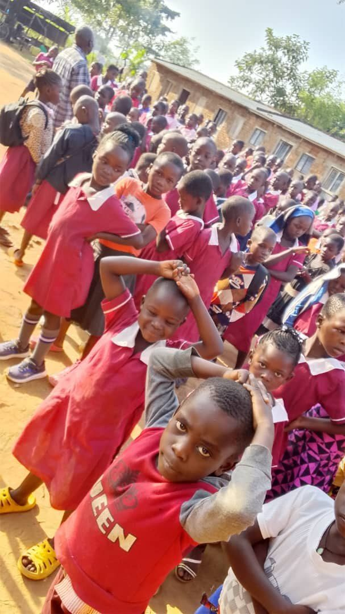
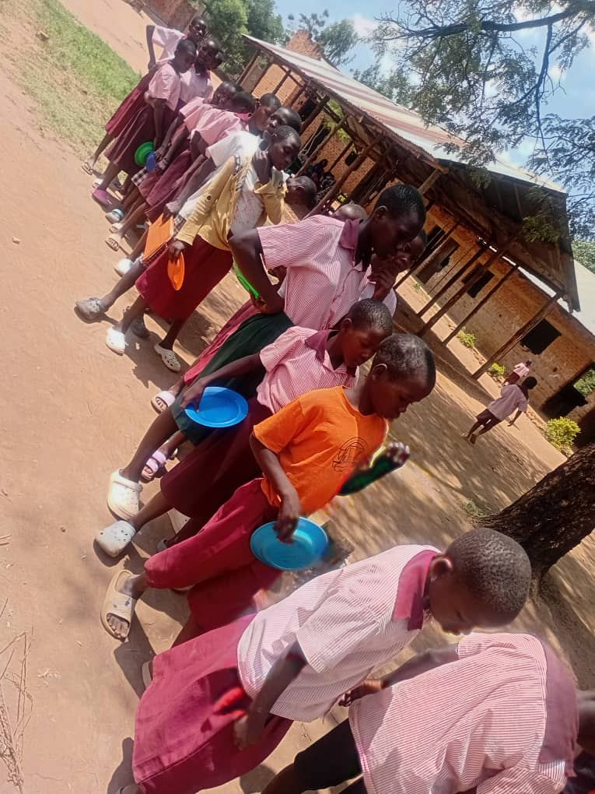

Classroom learning
Structured lessons that build knowledge, literacy, numeracy and confidence.
“In God We Can.” A Christian learning community nurturing knowledge, character, faith and practical ability in Budaka District.
Kireta Care Primary School grew from the Foundation’s wider commitment to children and vulnerable families. As the Foundation encountered children whose opportunities were limited by poverty and difficult family circumstances, the importance of accessible, consistent and values-based education became clear.
The school was developed as a practical expression of the belief that every child deserves a place to learn, grow and belong. Its physical environment and learning community continue to develop, reflecting the Foundation’s commitment to creating a place where children can receive guidance, discover their abilities and prepare for the future. It is rooted in Christian values and seeks to provide more than academic instruction: it aims to nurture the whole child—mind, character, relationships, creativity and faith.
Serving a largely farming community in Budaka District, the school provides learning from Baby Class through Primary Seven. It seeks to work alongside parents and the wider community so that children can build strong foundations for further education and responsible participation in society.


School figures supplied for the website.
The school provides a continuous learning pathway that supports children through foundational early childhood learning and the primary years.
Building language, social interaction, early number concepts, curiosity and readiness for primary learning through guided play and structured activities.
Strengthening literacy, numeracy, communication, discovery and the essential foundations for independent learning.
Deepening subject knowledge, reasoning, responsibility and preparation for the next stage of education.
Develop strong reading, writing, numeracy, communication and problem-solving skills.
Encourage faith, honesty, kindness, respect, discipline and a sense of responsibility.
Give learners opportunities to discover talents, express ideas and participate with confidence.
Connect learning with agriculture, art, craft, environmental care and everyday problem-solving.
Promote sports, games and physical education as part of a balanced and healthy school experience.
Prepare children to respect others, contribute positively and care for their communities.
Children develop in many ways. The school values activities that nurture the whole learner.

Structured lessons that build knowledge, literacy, numeracy and confidence.

Games and movement that build fitness, teamwork and resilience.

Creative expression that develops confidence, culture and communication.

Experiences that help children appreciate food production, nature and responsibility.
We seek to guide each learner with care, encouragement and a strong foundation for life.